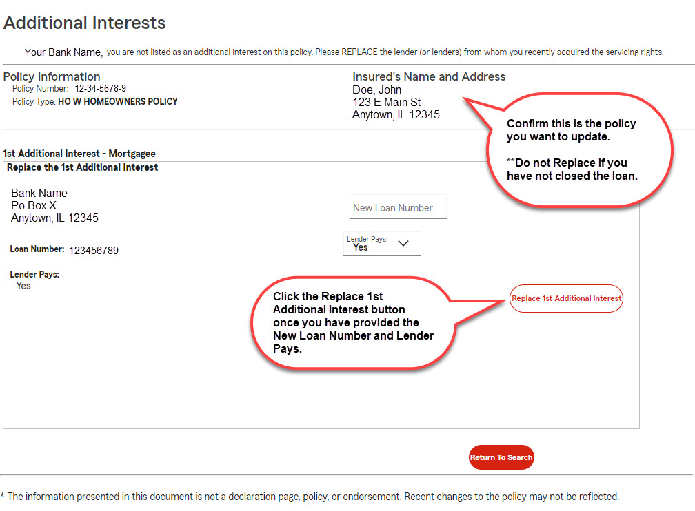
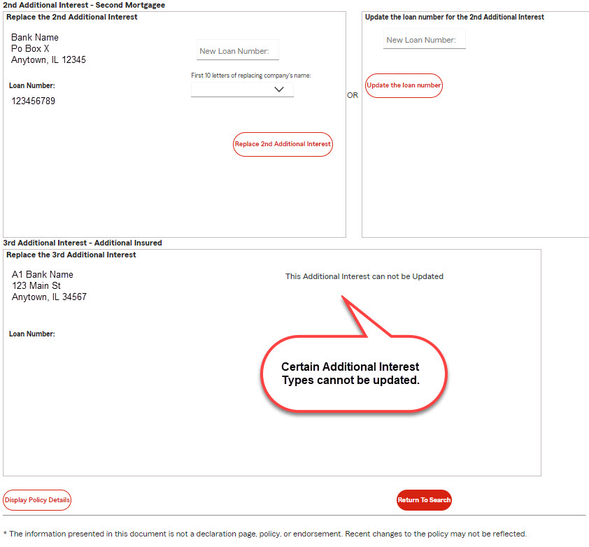
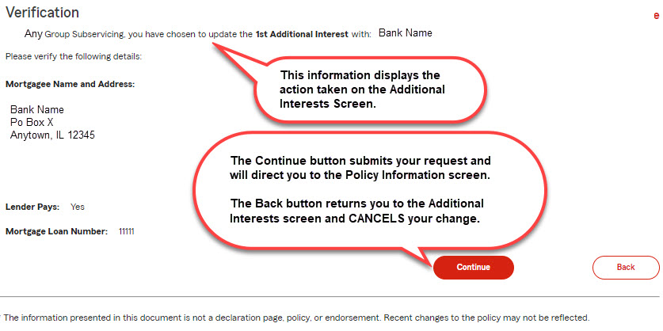
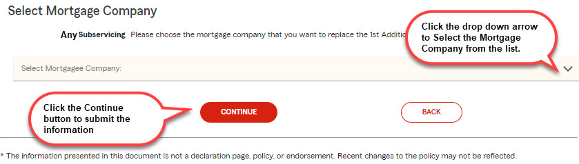

Additional Interests are people, companies, and other entities (mortgagee, lienholder, loss payee, and additional insured) interested in a specific insurance policy. Several different types of Additional Interests may be listed on a single policy.
Mortgage Lenders can access the Additional Interest screens many different ways within Insurance Inquiry:
In the Insurance Inquiry application the Additional Interest can replace, or take the position of, a lender currently on the policy. Using the Additional Interests screen, you can replace the lender from whom you acquired the servicing rights. A portion of the Additional Interests screen is displayed below.

Sometimes one lender will have multiple additional interests they can update or replace. If present, 2nd and 3rd Additional Interests will be listed below the 1st Additional Interest. Only the information that is outlined with a black box can be updated.
Below is the bottom portion of an Additional Interests screen displaying the 2nd and 3rd additional interests.

After making updates to a 1st, 2nd, or 3rd Additional Interest on the Additional Interests screen, the Verification screen opens. Each time you update information and click the Replace or Update button on the Additional Interests screen, you will be asked to verify your changes.

Insurance Inquiry allows Servicers to track the hazard insurance protecting their loan. In Servicer cases, the Insurance Inquiry application connects all of the lenders serviced by that Servicer. When a Servicer wants to replace a lender on a policy, the Select Mortgage Company screen opens. From the Select Mortgage Company screen, the Servicer can select the mortgage company they want to replace the current interest.
